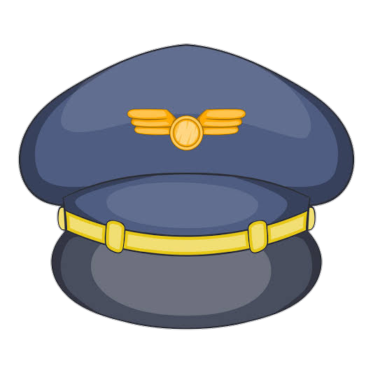

Hobiku adalah berenang, Yuk baca!
Cita-citaku menjadi pramugara, Yuk baca!
Nama Lengkap aku adalah Firman Hasudungan Simatupang, Aku anak ketiga dari tiga bersaudara, Aku Hidup di keluarga sederhana, namun keluargaku saling menyayangi satu sama lain, Saat itu aku duduk di bangku kelas 6 SD, Aku dan teman-temanku sering bercerita tentang masa depan kita, Setelah dewasa nanti aku ingin menjadi seorang pramugara.
Sekarang di sekolah SMA NEGERI LAGUBOTI aku sangat menyukai pelajaran IPS ( Ilmu Pengetahuan Sosial) karena menurut buku yang ku baca dengan memahami pelajaran IPS, dapat membantuku dan mempermudah untuk menjadi seorang pramugara, Selain itu aku juga mengikuti les bahasa Inggris, Karena menjadi pramugara tidak segampang yang kita pikirkan, Menjadi pramugara harus menguasai beberapa ilmu bahasa, salah satunya adalah bahasa Inggris, Bahasa Inggris adalah bahasa internasional jadi aku perlu menguasainya untuk menjadi pramugara.
Untuk menguasai bahasa Inggris aku mengambil beberapa pelajaran tambahan di les, Aku berangkat les jam 18:00 wib, tempat lesku berada di Jombang Jember. Sesampainya di sana aku langsung mengambil buku lesku, Di tempat les selain setoran bahasa Inggris Guruku juga biasa mengajak bermain game, Game itu adalah game bahasa Inggris yaitu mengenal barang dengan bahasa Inggris, Dengan melakukan kegiatan game aku jadi bisa tahu banyak kosakata dalam bahasa Inggris, Les berakhir pada jam 19:30 wib dan aku dijemput oleh Ayahku untuk pulang. Aku akan mengejar cita-citaku agar tercapai meskipun dengan pengorbanan yang sangat-sangat berat, Menurut yang aku baca ada beberapa syarat menjadi pramugara yang harus dipenuhi yaitu harus memiliki tinggi badan minimum 158 sampai 172 cm, Syarat itu tak mudah namun aku setiap hari berusaha untuk berolahraga supaya aku menjadi lebih tinggi.
Live life to the fullest, and focus on the positive!
